Can NEAR usage pay for NEAR issuance?
1. Issuance: supply growth was cut in half
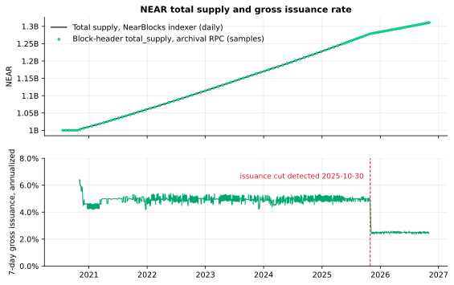
Gross issuance ran at 4.98% a year before 2025-10-30 and 2.49% after it; 107 archival block headers match the indexer's daily supply within 0.017%.
Source: https://api.nearblocks.io/v1/charts (total_supply, txn_fee)
archival JSON-RPC `block` (fields total_supply, chunks[].balance_burnt, next_epoch_id), one header every 2,000,000 heights
Method: minted(day) = total_supply(day) - total_supply(day-1) + beta * txn_fee(day); rate = 7-day minted / supply * 365/7. beta is the RPC-measured burn/fee ratio (chart 2).
Code: nut/analysis.py::issuance_section - Data: data/processed/daily.csv
2. Onchain check: burn vs minting per epoch
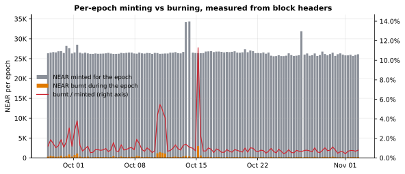
Over the last 120 epochs (2026-09-28 to 2026-11-02) the protocol minted 3.19M NEAR and burnt 36.7K NEAR, so gas burn offset only 1.15% of issuance (2.49% a year).
Source: archival JSON-RPC `block` (fields total_supply, chunks[].balance_burnt, next_epoch_id)
Method: For each epoch: minted = supply(first block of next epoch) - supply(last block) + burn in that first block; burnt = supply(first block) - supply(last block) + burn in the first block.
Code: nut/rpc.py::fetch_epochs - Data: data/processed/epochs.csv
3. Value capture vs issuance, by month
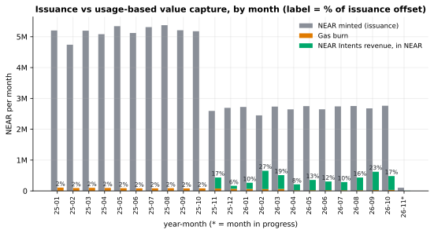
In 2026-10, gas burn plus NEAR Intents revenue offset 17.4% of the NEAR minted (burn 1.1%, Intents 16.3%); in 2026 the monthly share ranged from 8.0% to 26.6%.
Source: https://api.nearblocks.io/v1/charts
https://api.llama.fi/summary/fees/near-intents?dataType=dailyRevenue
https://api.nearblocks.io/v1/charts (near_price, to convert USD revenue to NEAR)
Method: coverage = (beta * txn_fee_near + intents_revenue_usd / price) / minted_near, summed per calendar month.
Code: nut/analysis.py::capture_section - Data: data/processed/value_capture_monthly.csv
4. Reproducing the official revenue dashboard
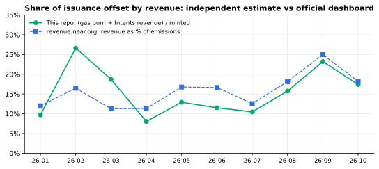
Across 10 complete months of 2026 our independent estimate differs from revenue.near.org by 3.9 percentage points on average (largest gap 10.2 pp in 2026-02); 7 of 10 months are within 5 pp.
Source: https://revenue.near.org/ (series embedded in the page: emissionsMonthly)
https://api.llama.fi/summary/fees/near-intents?dataType=dailyRevenue
https://api.nearblocks.io/v1/charts
Method: Same coverage ratio as chart 3, compared month by month with the official 'Revenue as % of NEAR emissions' series. The official methodology is not published in machine-readable form, so differences are reported, not explained away.
Code: nut/analysis.py::official_section - Data: data/processed/coverage_vs_official.csv
5. Usage: L1 activity fell while cross-chain volume grew
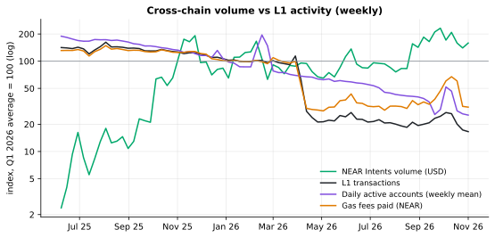
From Q1 2026 to the last 90 days, average daily L1 transactions changed -79% and active accounts -64%, while daily NEAR Intents volume changed +60%.
Source: https://api.nearblocks.io/v1/charts (txns, active_accounts, txn_fee)
https://api.llama.fi/summary/dexs/near-intents
Method: Weekly sums (weekly mean for active accounts), each indexed to its Q1 2026 average = 100, log scale.
Code: nut/charts.py::usage - Data: data/processed/daily.csv
6. How much of each Intents dollar NEAR keeps
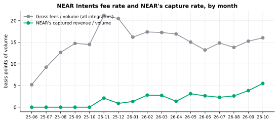
NEAR's captured revenue rose from 2.1 basis points of Intents volume in 2025-11 to 5.5 bps in 2026-10, while gross fees stayed around 15 bps (last 90 days).
Source: https://api.llama.fi/summary/dexs/near-intents
https://api.llama.fi/summary/fees/near-intents?dataType=dailyFees
https://api.llama.fi/summary/fees/near-intents?dataType=dailyRevenue
Method: bps = 10,000 * monthly revenue (or gross fees) / monthly volume.
Code: nut/analysis.py::capture_section - Data: data/processed/value_capture_monthly.csv
7. Revenue in USD vs revenue in NEAR
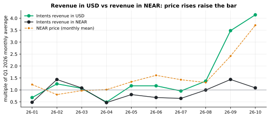
Average monthly Intents revenue in 2026-08..2026-10 was 3.0x its Q1 2026 level in USD but only 1.2x in NEAR, because the NEAR price rose 2.5x; issuance is fixed in NEAR, so a higher price raises the bar.
Source: https://api.llama.fi/summary/fees/near-intents?dataType=dailyRevenue
https://api.nearblocks.io/v1/charts
Method: Monthly Intents revenue in USD, the same revenue divided by the daily NEAR price, and the monthly mean price, each divided by its Q1 2026 monthly average.
Code: nut/charts.py::reflexivity - Data: data/processed/value_capture_monthly.csv
8. Does anything lead? Lead-lag tests
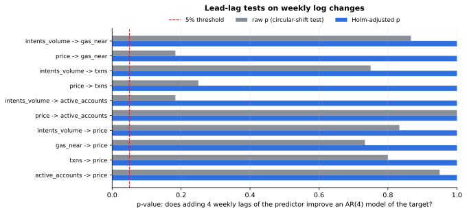
0 of 10 lead-lag tests pass the Holm-adjusted 5% threshold over 74 weeks (0 pass before correction); Intents volume explains more of next weeks' L1 usage than price does for 1 of 3 usage metrics.
Source: https://api.llama.fi/summary/dexs/near-intents
https://api.nearblocks.io/v1/charts
Method: Weekly log changes, 74 weeks from 2025-06-08 to 2026-11-01. F-test of 4 predictor lags added to an AR(4) model; p-value from all circular shifts of the predictor of at least 8 weeks; Holm correction across 10 tests.
Code: nut/leadlag.py - Data: data/processed/weekly_leadlag_inputs.csv
9. Cross-correlations by lag
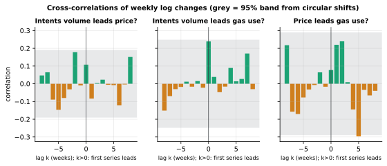
Same-week correlation between Intents volume growth and NEAR price returns is 0.11; Intents->price: 0 of 16 non-zero lags outside the 95% band; Intents->gas: 0 of 16 non-zero lags outside the 95% band; price->gas: 1 of 16 non-zero lags outside the 95% band.
Source: https://api.llama.fi/summary/dexs/near-intents
https://api.nearblocks.io/v1/charts
Method: corr(x[t-k], y[t]) for k = -8..8 weeks; band = 95th percentile of |corr| over all circular shifts >= 8 weeks, pooled across lags.
Code: nut/leadlag.py::xcorr - Data: data/processed/weekly_leadlag_inputs.csv
10. Where the bought-back NEAR sits
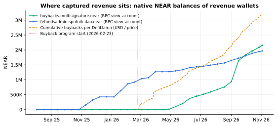
Revenue wallets listed on revenue.near.org hold native NEAR (nothing is burned): buybacks.multisignature.near held 2.16M NEAR on 2026-11-02 (first sample above 10K NEAR: 2026-04-27); fefundsadmin.sputnik-dao.near held 1.97M NEAR (above 10K NEAR since the 2025-11-08 sample). DefiLlama attributes 3.16M NEAR of buybacks to the period since 2026-02-23.
Source: archival JSON-RPC `query` view_account at sampled heights
https://api.llama.fi/summary/fees/near-intents?dataType=dailyHoldersRevenue
Method: Native balance (amount + locked) of each wallet listed on revenue.near.org, sampled with the supply samples; DefiLlama holders revenue (USD) divided by the daily NEAR price and accumulated.
Code: nut/rpc.py::fetch_wallet_balances - Data: data/processed/wallet_balances.csv
11. What it would take: break-even scenarios
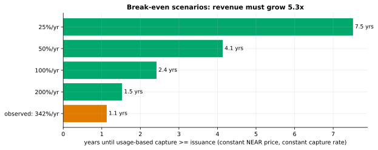
At the last 90 days' capture rate (4.1 bps) and price, usage-based capture covers 18.7% of issuance in USD terms; it must grow 5.3x, which means about $715.07M of Intents volume per day (now $127.59M). Even at the launch-phase year-over-year volume growth (342%) that takes 1.1 years with price and capture rate held constant; at 50% a year it takes 4.1 years.
Source: charts 3 and 6
https://api.llama.fi/summary/dexs/near-intents
Method: multiple = sum(minted * price) / sum(burn * price + intents revenue) over 90 days; years = ln(multiple) / ln(1 + g). Scenarios, not forecasts.
Code: nut/analysis.py::breakeven_section - Data: docs/metrics.json
12. Data checks between independent sources
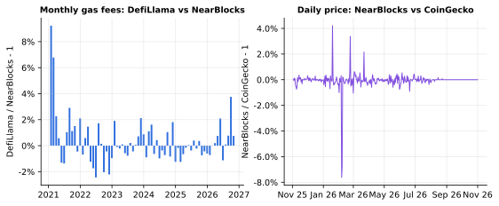
Monthly gas fees from DefiLlama (Allium) and NearBlocks differ by -1% to +4% over the last 24 months, and the NearBlocks price is within 0.6% of CoinGecko on 95% of 364 days (a consistency check only: NearBlocks may source prices from CoinGecko).
Source: https://api.llama.fi/summary/fees/near?dataType=dailyFees
https://api.nearblocks.io/v1/charts
https://api.coingecko.com/api/v3/coins/near/market_chart?vs_currency=usd&days=365
Method: Ratio of monthly fee sums; absolute relative price difference per day.
Code: nut/analysis.py::data_checks_section - Data: data/processed/fees_cross_check_monthly.csv
Reproduce
git clone https://github.com/Raindess69/near-usage-thesis && cd near-usage-thesis
python3 -m venv .venv && . .venv/bin/activate && pip install -r requirements.txt
make build # offline: rebuilds every chart, this page and THESIS.md from data/raw/
make verify # checks the rebuilt numbers match the committed ones
make all # refetches all raw data (public APIs + archival RPC), then rebuilds